Using the UNTL Editing System
Navigating the Editing System
This provides an overview of some of the features in the editing system; to see context about using edit system features for quality control, see the page on the Edit Dashboard.
Dashboard
The Dashboard (also called the “search” interface) is the main interface view when an editor logs in. It will display any records that a user has permission to edit. The displayed records can be adjusted by using the filters on the left side of the screen (e.g., by resource type, public visibility, etc.), by searching for a particular term in the search box at the top of the screen, or by sorting in various ways.
Changing Views
Filters. A filter will only display if at least two options are available, depending on permissions and other criteria. For example, if an editor only has access to photograph collections, they will not see the “resource type” filter; if the search term (or other set filters) only apply to public records, the “visibility” filter will not display. Here is a full list of possible filters:
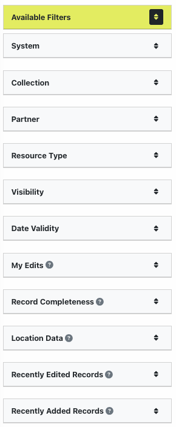Each filter shows up to 7 options, clicking one will change the Dashboard results to show records matching that option and it will display above the filter list
Example of filter options |
Example of display message |
| 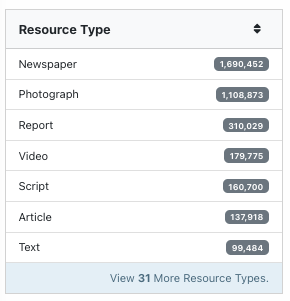 | 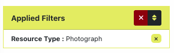 |
For filters that have more than 7 options, a link at the bottom of the filter box lets you search all available values:
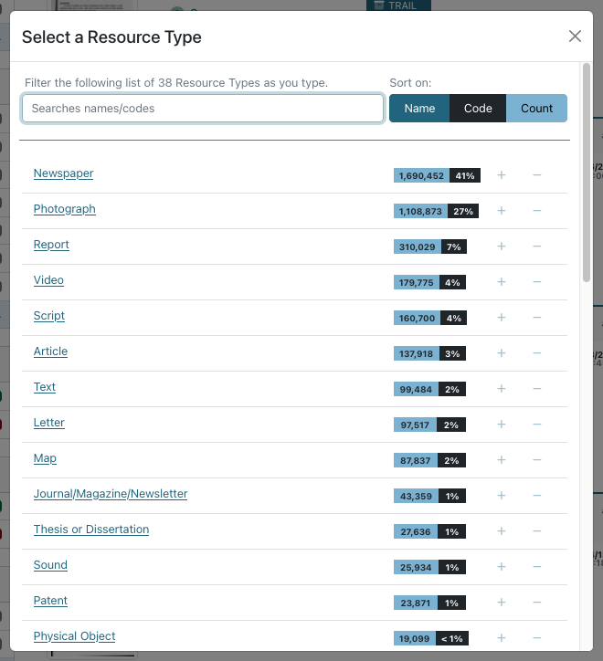Searching. Entering terms in the search box will look for matching text in any records displaying in the Dashboard (i.e., based on filters and editor permissions). The search can be general, limited to a specific field, or in the item text (using the OCR for printed text items).
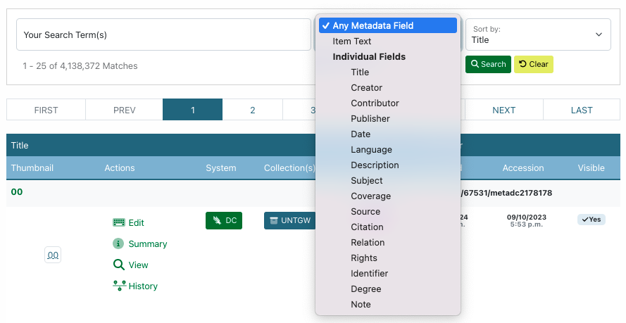Sorting. The result list of records sorts alphabetically by title as a default but can also be sorted by date created, added, or modified; ARK identifier; or completeness.
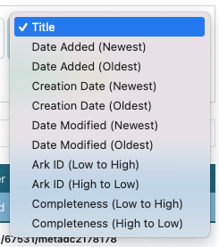Record Listings
Below the search box, there are radio buttons to change the results to a list (default), grid, or brief view

In the default view, each record listing includes a thumbnail and summary information; clicking the title or thumbnail will open the record summary:
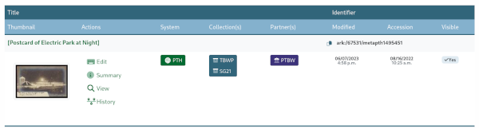Several parts of the record listing are links to various functionality:
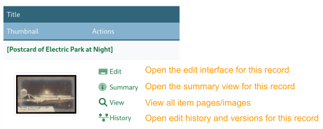 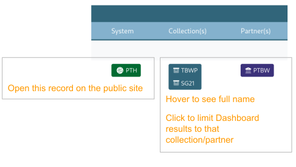 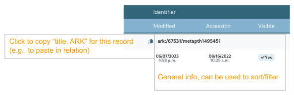The grid view displays much of the same information in a condensed format, with 30 records per page:
Example of a single record entry in grid view |
Single record entry with features listed |
| 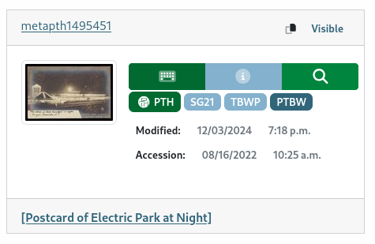 | 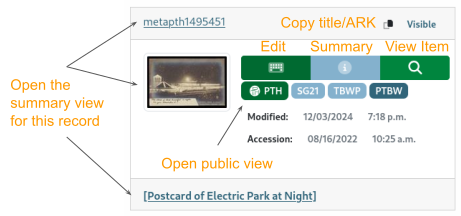 |
The brief view shows 99 records per page and only lists the meta id, edit button (linking directly to the editing interface), and title (linking to the summary view) for each record:
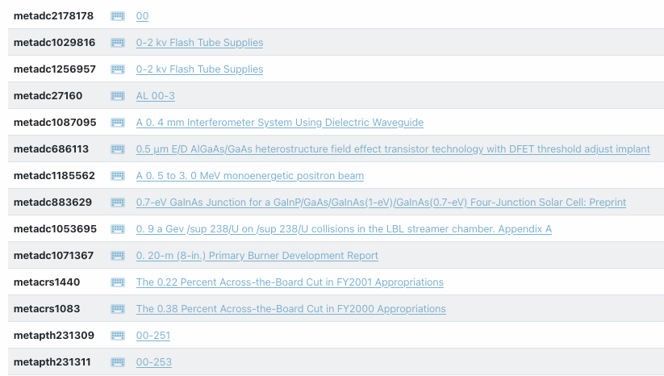Record Summary
The record summary displays a large view of the item thumbnail along with a summary of information about the record:
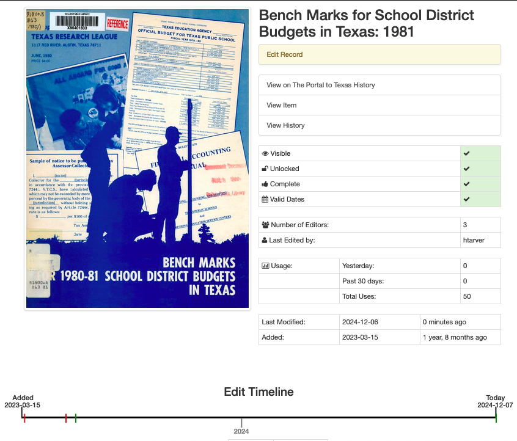Several parts of the record summary are links to various functionality or highlight information:
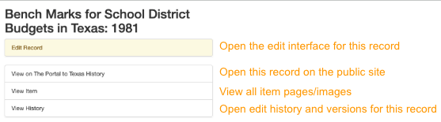 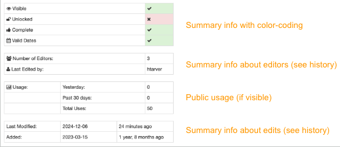 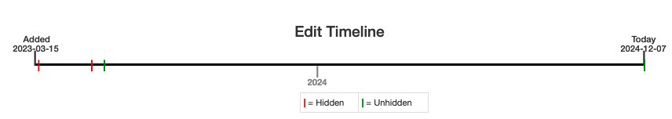Below the edit timeline there is a full, condensed view of the metadata record; this can be useful for proofreading (including checking if values and qualifiers match).
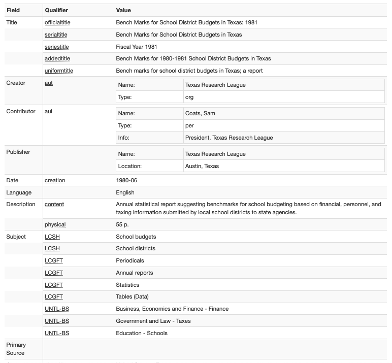Record Edit Form
The edit view shows all of the metadata fields available in the record with any values that have been entered:
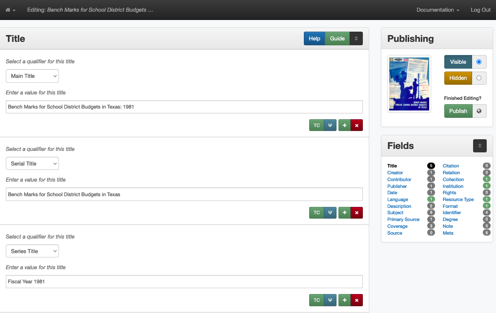There are several features in the “side-car” at the right side of the screen:
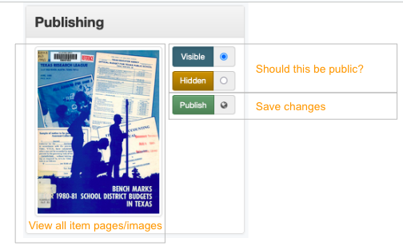
Each field is in a separate box:
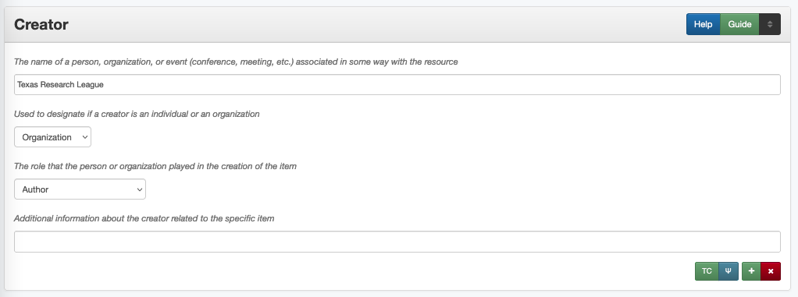There are several links in the title bar and in the bottom-right corner of each field box:
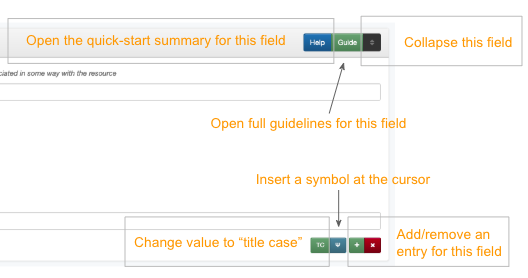Validation and Helper-Tools
There are a number of tools built into the system to make suggestions or highlight values that do not match expectations.
Warning Messages For validation, if a field value seems wrong, the field will be highlighted in the sidecar along with a message explaining what needs to be checked:
| 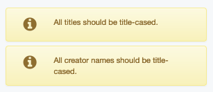 | This warning appears if a title, creator, contributor, or
publisher value is more than 50% capitalized.
In rare instances, these values may be correct
|
| 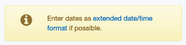 | This warning appears if a value in the date or coverage date field does not conform to EDTF specifications (check guidelines for more info} |
| 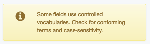 | This warning appears if a subject value does not match the vocabulary qualifier – this only works for vocabularies that have search modals |